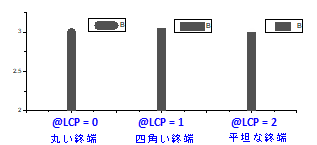
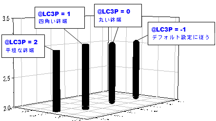
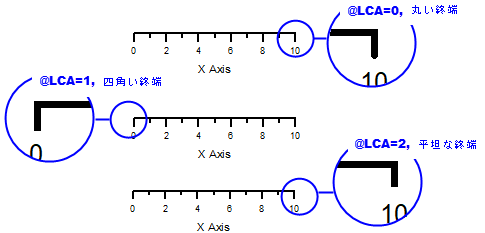
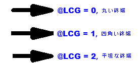
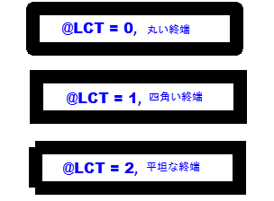

最終更新日：2019/12/22
2Dおよび3D曲線、軸および目盛、線オブジェクト（矢印を含む）など、Originのほとんどの線は、デフォルトで終端が丸い形状になっています。
線の終端を四角にするには、適切なシステム変数を選択してください。
| システム変数 | 対象 | 値 |
|---|---|---|
| LCP | 2D折れ線グラフ |  |
| LC3P | 3D折れ線グラフ |  |
| LCA | 2Dデカルト座標の軸線と目盛 |  |
| LCAL | 任意の2D座標系の軸線と目盛 |
@LCAL = -2:
@LCAL = -1:
|
| LCG | 矢印、直線、折れ線オブジェクトの線 |  |
| LCT | テキストや凡例の枠の線 |  |
| LCR | 四角形オブジェクトの線 |
@LCR = 0: 丸い終端 |
システム変数の設定方法
キーワード：四角, 丸, 線の終端, 凡例の枠, 直線オブジェクト, 矢印, 四角形, 軸線の終端